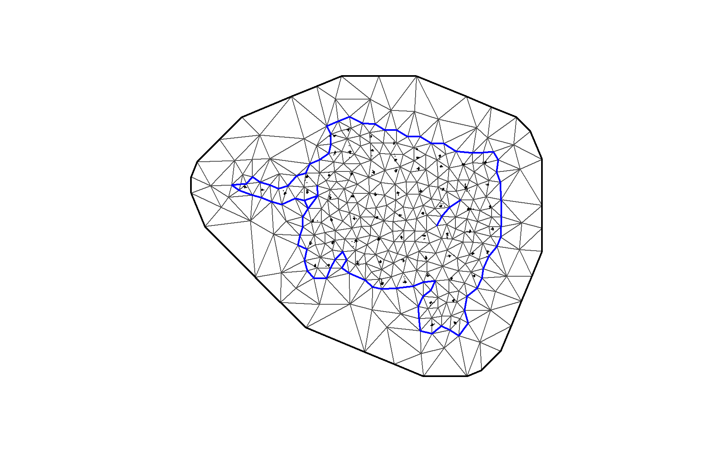
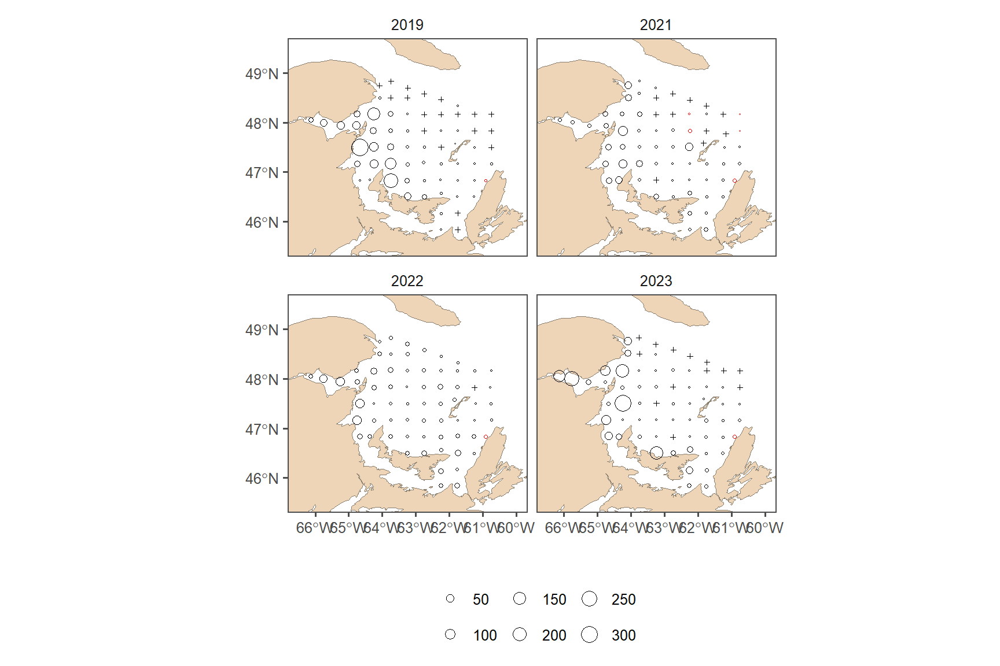

Read
2024-09-24
## Warning: le package 'knitr' a été compilé avec la version R 4.3.3##### my packages ################################################################################
## CRAN
cran.packages <- c('tidyverse','boot','magrittr','ggpmisc','ggpubr','ggthemes','mgcv',
'fields', 'inlabru', 'sf', 'PresenceAbsence', 'verification', 'raster',
'scales', 'nlme','nls.multstart', 'stringr', 'ggforce')
install.this <- cran.packages[!(cran.packages %in% utils::installed.packages()[,"Package"])]
if(length(install.this)>=1) install.packages(install.this)
dummy <- lapply(cran.packages, require, character.only = TRUE)
## github
git.packages <- c('catchR','DFOdata','CCAM', 'INLA')
install.this <- git.packages[!(git.packages %in% utils::installed.packages()[,"Package"])]
if('catchR' %in% install.this) devtools::install_github("iml-assess/catchR@eli_parallel")
if('DFOdata' %in% install.this) devtools::install_github("im-assess/DFOdata")
if('CCAM' %in% install.this) devtools::install_github("elisvb/CCAM")
if('INLA' %in% install.this)install.packages("INLA",repos=c(getOption("repos"),INLA="https://inla.r-inla-download.org/R/stable"), dep=TRUE)
dummy <- lapply(git.packages, require, character.only = TRUE)
##### source R directory ############################################################################
#invisible(sapply(list.files(pattern="[.]R$", path="R/", full.names=TRUE), source))
##### my ggplot theme ################################################################################
theme_set(theme_mackerel()) # theme_mackerel from catchR
update_geom_defaults("line", list(size = 1)) # no idea why somethimes I get fat lines otherwise
##### passwords databases #############################################################################
source("bdOracle.R")
source(paste0("R/",my.year,"/utils/basemap.R")) #if error "plot new has not been call", restart R, package compatibility issues
source(paste0("R/",my.year,"/utils/mackerel_fun_incubation.R")) # Mackerel incubation .
source(paste0("R/",my.year,"/utils/spatial_projections.R"))#
source(paste0("R/",my.year,"/utils/extract_biochem.R"))
source(paste0("R/",my.year,"/utils/extract_T0_10.R"))
source(paste0("R/",my.year,"/INLA/Mesh.R"))
source(paste0("R/",my.year,"/INLA/INLA_ZAG_covar_Stations.R"))
source(paste0("R/",my.year,"/INLA/INLA_ZAG_covar_Stations_CV.R"))
source(paste0("R/",my.year,"/utils/nlme_boot.R"))
source(paste0("R/",my.year,"/INLA/INLA_tw_covar_Stations.R"))
source(paste0("R/",my.year,"/INLA/INLA_tw_covar_Stations_CV.R"))
source(paste0('R/',my.year,'/INLA/plotSpatialFieldCL.R'))
source(paste0('R/',my.year,'/INLA/plotSmoother.R'))
source(paste0('R/',my.year,'/INLA/model_validation.R'))
source(paste0('R/',my.year,'/INLA/get_prediction_grid.R'))
source(paste0('R/biochem/PL_Get_SampleID_Batch.R'))
source(paste0('R/biochem/PL_Get_Counts_Batch.R'))
source(paste0('R/biochem/PL_Read_Filter.R'))
source(paste0('R/biochem/PL_Taxonomic_Grouping.R'))
log10p1_trans = function() scales::trans_new("log10p1", transform=function(x) log10(x+1), inverse=function(x) (10^x)-1)#inverse function is necessary for legend
#source(paste0("R/",year_to_report,"/INLA/getvar.R")) # needs to be retought1 DEP
1.1 INLA Mesh
###INLA mesh###
load(file=paste0("data/",my.year,"/eggt1.RData"))
loc_egg1 <- make_boundary(dat = eggt1, year=my.year, trajet = 1)
## Deleting source `data/2024/INLA/prediction_grid_area2024_trajet1.shp' using driver `ESRI Shapefile'
## Writing layer `prediction_grid_area2024_trajet1' to data source `data/2024/INLA/prediction_grid_area2024_trajet1.shp' using driver `ESRI Shapefile'
## Writing 1 features with 0 fields and geometry type Polygon.
make_mesh(range = 150, Loc = loc_egg1, year=my.year, trajet = 1)
## Reading layer `prediction_grid_area2024_trajet1' from data source `C:\LEHOUX\Maquereau\iml-mackerel\03.0_egg-index\data\2024\INLA\prediction_grid_area2024_trajet1.shp' using driver `ESRI Shapefile'
## Simple feature collection with 1 feature and 1 field
## Geometry type: POLYGON
## Dimension: XY
## Bounding box: xmin: 154156.8 ymin: 207793.2 xmax: 606003.4 ymax: 569285.9
## Projected CRS: NAD83 / Quebec Lambert
# prediction grid for INLA
predstation <- expand_grid(distinct(eggt1 %>% dplyr::select(year)), eggt1 %>% group_by(station) %>% dplyr::summarise(x = mean(longitude, na.rm = T), y = mean(latitude, na.rm = T)) %>% mutate(station = as.factor(station))) %>%
st_as_sf(coords=c("x", "y"), crs=4326, remove=F) %>% st_transform(lcc)
predstation<- bind_cols(predstation, st_coordinates(predstation) %>% as.data.frame() %>% dplyr::rename(X.m=X, Y.m=Y)) %>% st_drop_geometry()
saveRDS(predstation, paste0("data/",my.year,"/INLA/prediction_grid_station", my.year, ".RDS"))1.2 Spatial field
if(new) INLA_tw(dat = eggt1, res_mesh = 150, res_pred = "station", year=my.year, Rvar = "DEP", trajet = 1)
##
## *** inla.core.safe: The inla program failed, but will rerun in case better initial values may help. try=1/1
##
## *** inla.core.safe: rerun with improved initial values
res_mesh = 150
res_pred = "station"
myfamily = "tw"
minw = -10
maxw = 10
smoother = F
Rvar = "DEP"
trajet=1
name = paste0(Rvar, "_INLA_mesh", res_mesh,"km_pred_",res_pred,"_",myfamily,my.year,"_trajet",trajet)
#extract predictions#
get_prediction_grid(dir=paste0("results/",my.year,"/INLA/"), dir.out=paste0("results/",my.year,"/INLA/predictions/"),name=name, trans="")
#plot random field#
spfield<- plotSpatialFieldCL(dir=paste0("results/",my.year,"/INLA/"),name=name ,minw=minw, maxw=maxw, my.year=my.year)
annotate_figure(spfield[[1]], "Tweedie")
1.3 Coefficients
plotSmoother(dir=paste0("results/",my.year,"/INLA/"),name=name, subfamily="tw",smoother=smoother)
fixed_effect1 <- read.delim(paste0("results/",my.year,"/INLA/fixed_effects_",name,"tw", ".txt"))
kable(fixed_effect1, caption="fixed effect tweedie")| mean | sd | X0.025quant | X0.975quant | |
|---|---|---|---|---|
| Intercept | 1.3468997 | 3.866087 | -6.234116 | 8.927912 |
| station1.1 | 0.1041274 | 3.883383 | -7.510797 | 7.719063 |
| station1.2 | -0.0199365 | 3.881156 | -7.630493 | 7.590633 |
| station1.3 | -3.0807496 | 3.891633 | -10.711860 | 4.550353 |
| station1.4 | -5.5604891 | 3.913945 | -13.235376 | 2.114342 |
| station1.5 | -6.8163136 | 3.940748 | -14.543822 | 0.911012 |
| station10.1 | 2.0345841 | 3.878654 | -5.571064 | 9.640247 |
| station11.1 | 3.0774373 | 3.880061 | -4.530969 | 10.685862 |
| station12.1 | 1.2256210 | 3.884218 | -6.390944 | 8.842191 |
| station2.1 | 0.4839816 | 3.880985 | -7.126238 | 8.094214 |
| station2.2 | -0.0394526 | 3.880151 | -7.648036 | 7.569146 |
| station2.3 | -0.6913010 | 3.881207 | -8.301959 | 6.919366 |
| station2.4 | -2.2616071 | 3.885114 | -9.879933 | 5.356715 |
| station2.5 | -3.5518060 | 3.891741 | -11.183141 | 4.079496 |
| station2.6 | -5.3743279 | 3.907080 | -13.035760 | 2.287035 |
| station3.1 | 1.3341211 | 3.881813 | -6.277721 | 8.945979 |
| station3.2 | 0.6453575 | 3.881004 | -6.964899 | 8.255627 |
| station3.3 | 0.8635994 | 3.879596 | -6.743896 | 8.471108 |
| station3.4 | 0.0649796 | 3.878242 | -7.539864 | 7.669834 |
| station3.5 | -0.2600045 | 3.877972 | -7.864318 | 7.344318 |
| station3.6 | -1.8277204 | 3.880862 | -9.437711 | 5.782260 |
| station3.7 | -2.2720023 | 3.885310 | -9.890722 | 5.346694 |
| station3.8 | -4.4706155 | 3.893415 | -12.105235 | 3.163968 |
| station3.9 | -6.4273311 | 3.914431 | -14.103171 | 1.248451 |
| station4.1 | 0.4663864 | 3.882414 | -7.146638 | 8.079422 |
| station4.2 | 1.2125548 | 3.879204 | -6.394172 | 8.819296 |
| station4.3 | 1.8151162 | 3.878002 | -5.789255 | 9.419500 |
| station4.4 | 0.3681117 | 3.877767 | -7.235801 | 7.972033 |
| station4.5 | 0.0029986 | 3.877957 | -7.601288 | 7.607290 |
| station4.6 | 0.3348193 | 3.877880 | -7.269322 | 7.938956 |
| station4.7 | -0.7480331 | 3.880476 | -8.357270 | 6.861188 |
| station4.8 | -2.4175832 | 3.883495 | -10.032744 | 5.197554 |
| station4.9 | -5.7461573 | 3.904730 | -13.402966 | 1.910612 |
| station5.1 | 1.3230014 | 3.877512 | -6.280411 | 8.926423 |
| station5.2 | 1.2962670 | 3.877557 | -6.307234 | 8.899775 |
| station5.3 | 0.9708003 | 3.877201 | -6.632006 | 8.573609 |
| station5.4 | 0.8921162 | 3.876923 | -6.710146 | 8.494376 |
| station5.5 | 1.0674405 | 3.876658 | -6.534301 | 8.669181 |
| station5.6 | -1.0769940 | 3.879200 | -8.683726 | 6.529726 |
| station5.7 | -3.0536369 | 3.885515 | -10.672757 | 4.565461 |
| station6.1 | 1.6354953 | 3.879292 | -5.971406 | 9.242409 |
| station6.2 | 1.6703839 | 3.877078 | -5.932177 | 9.272953 |
| station6.3 | 1.5976015 | 3.878577 | -6.007898 | 9.203111 |
| station6.4 | 1.4933566 | 3.877344 | -6.109730 | 9.096444 |
| station6.5 | 1.4292011 | 3.877175 | -6.173555 | 9.031959 |
| station6.6 | 0.6817270 | 3.877140 | -6.920959 | 8.284413 |
| station6.7 | -1.4561055 | 3.881691 | -9.067723 | 6.155501 |
| station6.8 | -2.9545927 | 3.917610 | -10.636646 | 4.727443 |
| station7.1 | 2.6223974 | 3.878287 | -4.982532 | 10.227342 |
| station7.2 | 2.5952649 | 3.877462 | -5.008048 | 10.198590 |
| station7.3 | 2.3784194 | 3.875943 | -5.221918 | 9.978764 |
| station7.4 | 2.1886154 | 3.876965 | -5.413725 | 9.790964 |
| station7.5 | 1.7068643 | 3.877940 | -5.897389 | 9.311125 |
| station7.6 | -0.0482074 | 3.879248 | -7.655029 | 7.558613 |
| station7.7 | -2.3178977 | 3.887583 | -9.941070 | 5.305258 |
| station8.1 | 0.5184259 | 3.880167 | -7.090191 | 8.127054 |
| station8.2 | 2.5914208 | 3.878095 | -5.013130 | 10.195988 |
| station8.3 | 3.0058640 | 3.876822 | -4.596193 | 10.607933 |
| station8.4 | 3.1569987 | 3.877054 | -4.445513 | 10.759524 |
| station8.5 | 2.6445907 | 3.876775 | -4.957375 | 10.246568 |
| station8.6 | 0.9369061 | 3.878615 | -6.668670 | 8.542488 |
| station8.7 | -0.1733166 | 3.882371 | -7.786263 | 7.439624 |
| station9.1 | 1.5238489 | 3.880703 | -6.085820 | 9.133528 |
| station9.2 | 2.1549361 | 3.878527 | -5.450464 | 9.760351 |
| station9.3 | 3.3310803 | 3.878370 | -4.274009 | 10.936189 |
| station9.4 | 1.8146435 | 3.877673 | -5.789084 | 9.418381 |
| station9.5 | 2.7316174 | 3.878087 | -4.872920 | 10.336166 |
1.4 Range
rtw<- myrange(dir=paste0("results/",my.year,"/INLA/"),name=name, subfamily="tw")
kable(rtw, caption="Range for Tweedie model")| x |
|---|
| Kappa=2.36e-05 |
| sigmau=2.235 |
| range (km)=120.04 |
| erreur around range (km)=111.207-129.038 |
1.5 Validation
validation_tw(dir=paste0("results/",my.year,"/INLA/"),name=name,
rvar="DEP")
1.6 INLA cross-validation
load(file=paste0("data/",my.year,"/INLA/INLA_CV_eggdata.RData"))
#do not need to do every year.
if(new) INLA_tw_CV(dat = eggcv_all , res_mesh = 150, res_pred = "station", trajet = 1, year=my.year, Rvar="DEP")
# to get result use summary fitted values
load(paste0("results/",my.year,"/INLA/DEP_INLA_mesh150km_pred_station_tw",my.year,"_CV_trajet1.RData"))
# Extract mean from fitted values
idb.prd <- inla.stack.index(stkalltw, "twFit")$data
# sd.prd <- I$summary.fitted.values$sd[id.prd]
mu <- Gtw$summary.fitted.values$mean[idb.prd]
eggcv_all$Fit <- mu
my.formula <- y ~ x # for smooth in ggplot
inlastation1 <- eggcv_all %>%
ungroup() %>%
filter(!sample_id %in% eggcv_to_fit$sample_id) %>%
dplyr::rename(inlastation = Fit) %>%
dplyr::select(sample_id, inlastation)
pcv <- full_join(eggt1 %>% filter(sample_id %in% inlastation1$sample_id), inlastation1) %>%
ggplot(aes(x = DEP, y = inlastation)) +
geom_point() +
geom_smooth(method = "lm") +
theme_few() +
stat_poly_eq(
formula = my.formula,
aes(label = paste(after_stat(eq.label), after_stat(rr.label), sep = "~~~")),
parse = TRUE, vstep = 0.08
) +geom_abline(slope=1, intercept=0, col="red", lty=2)
##attention il faut sauvegarder eggcv pour que cette figure soit reproductible.
mybreaks=c(0,10,30,100,300,1000,1500)
pcv + scale_x_continuous(name = "Observed daily egg production (N/m²/day)", trans = "log10p1", breaks=mybreaks) + scale_y_continuous(name = "Predicted daily egg production (N/m²/day)", trans = "log10p1", breaks=mybreaks)
1.7 DEP MAPs
predt1 <- read.delim(paste0("results/",my.year,"/INLA/predictions/predictions_DEP_INLA_mesh150km_pred_station_tw", my.year, "_trajet1.txt"))
lookup <- read.delim("data/lookup_station_egg.txt")
DEPt1a <- full_join(eggt1 %>% mutate(station=as.numeric(station),
stratum=as.numeric(stratum)), left_join(predt1, lookup %>% dplyr::select(-c(depth, latitude, longitude)))) %>% mutate(DEP = coalesce(DEPbackup, Fit))
DEP <- full_join(lookup %>% dplyr::rename(lat=latitude, lon=longitude) %>% dplyr::select(station, lat, lon),
DEPt1a %>% mutate(estimated = ifelse(is.na(DEPbackup) & !is.na(DEP), "estimated", "observed"))) %>%
mutate(latitude=coalesce(latitude, lat),
longitude=coalesce(longitude,lon))
year_to_plot= (my.year-5) : my.year
basemap2 +
geom_point(data = DEP %>% filter(year %in% year_to_plot,DEP > 0), aes(x = longitude, y = latitude, size = DEP, col = estimated), shape = 1) +
geom_point(data = DEP %>% filter(year %in% year_to_plot,DEP == 0), aes(x = longitude, y = latitude), shape = 3, size=0.8) +
facet_wrap(~year) +
scale_color_manual(values = c("red", "black"), guide = "none") +
theme_few()+ theme(legend.position="bottom")+
scale_size_continuous(name="",breaks=c(seq(0, ceiling(max(DEP$DEP)), 50)),range=c(0.25,5))
ggsave(paste0("img/",my.year,"/DEP_tw.png"), width=9, height=7, dpi=600, units="in")
save(DEP, file=paste0("data/",my.year,"/DEP_tw.RData"))